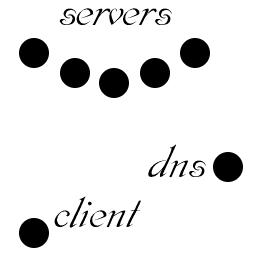

| Backhand Server Model |
|  |
| |
| Advantages: |
| Configuration is simple. |
| Dynamic load balancing is possible. |
| Redundancy in the servers (more so than
in the simple DNS rotation scheme) |
| Unlimited bandwidth by adding servers. |
| CPU power, disk throughput
expandable (add computers). |
|
| Disadvantages: |
| Small overhead in forwarding connections
from server to server. (tiny when well implemented) |
|
| Comments: |
The main downside, is that all five people know about
this system design and thus it has little popularity.
Of course, if the results are good, that will change.
|
|